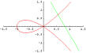

GSU Undergraduate Student Research
ASPIRES SUMMER RESEARCH OPPORTUNITIES
NASA Undergraduate Student Research Project (USRP)

Instantaneous rate of change at \(x=a\) equals to \(f'(a)=\lim_{h\to 0} \frac{f(a +h)-f(a)}{h}\)
Limit formulae: \( \lim_{x\to 0} \frac{\sin x}{x}=1.\) \(\lim_{x\to\infty} (1+\frac{a}{x})^x=e^a\)
Fundamental Theorem of Calculus: \begin{align*} &\dfrac{d}{dx}\int f(t)dt=f(x)\\ &\int_a^b f(x)dx=F(b)-F(a) \end{align*}
Generalized Witch of Agnesi paradox: Let \(y=\frac{1}{(1+x)^a} \), \(0.5 < a \leqslant 1\), \(x\in [0,\infty)\).
Then the volume of the solid of rovolution about the curve's asymptote is given by
\(V=\pi\int_0^\infty \frac{1}{(1+x)^{2a}}dx=\frac{\pi}{2a-1}\)
but the surface area of the solid of revolution is
\begin{align*}
&S=2\pi\int_0^\infty y \sqrt{1+y'^2} dx=\infty!
\end{align*}
|  |
What Calculus can do GSU Undergraduate Student Research ASPIRES SUMMER RESEARCH OPPORTUNITIES NASA Undergraduate Student Research Project (USRP) |
| Class schedule by chapters/sections (tentative) | |||
|---|---|---|---|
| Functions (Review) | 1.1-1.6 | ||
| Limits and Continuity | 2.1-2.2 2.3* 2.4-2.6 | ||
| Differentiation | 3.1-3.2 3.3, 3.5-3.6 3.7*-3.9* | ||
| Exam 1 | Chap.2 and Chap.3 | ||
| Applications of Derivatives | 4.1 4.2-4.4 4.5-4.8 | ||
| Exam 2 | Chap.4 | ||
| Integration | 5.1 5.2 5.3-5.6 | ||
| Midterm 3 | Chap.5 | ||
| Applications of Definite Integrals | 6.1 - 6.7 | ||
| Cumulative Final Exam | May 5, 12:30-2:30 | ||
The implicit function \(y=y(x)\) is defined by the equation \( y^4-4y^2=x^4-9x^2\)
| Review | Exam | Date |
|---|---|---|
| Review Exam I | Exam I | |
| Review Exam II | Exam II | |
| Review Exam III | Exam III | |
| Review Final | Final Exam | |